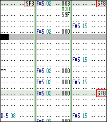

|
Maxmod
|
This article will explain a bit on how to create and receive song events.
Song events are triggered by the unused effect SFx with S3M and IT modules, or EFx with MOD and XM modules.

Above is a piece from the final boss music of Super Wings. The SF3 effect is a signal for the boss to dissapear from the screen. The SF8 effects are cues for a fresh batch of laser shurikens to appear :). In the previous pattern, there is an SF2 effect to tell the boss to move to the center of the screen (before dissapearing).
If you are confused, you should go play Super Wings right now!
To receive song events, you must first setup a special callback function. After that you can use the mmSetEventHandler() function.
There are two types of events received through this function.
This is the event that was explained above. param will contain the number specified in the pattern effect (ie. param will be 1 for SF1/EF1).
This is another special event that occurs when the song reaches the END marker. It only happens if you passed MM_PLAY_ONCE to mmStart(). param will contain either 0 or 1. If the main module has ended, it will contain 0. If the sub module (jingle) has ended, it will contain 1.
Use the mmSetEventHandler() function to install your handler. Call this after you have initialized Maxmod.